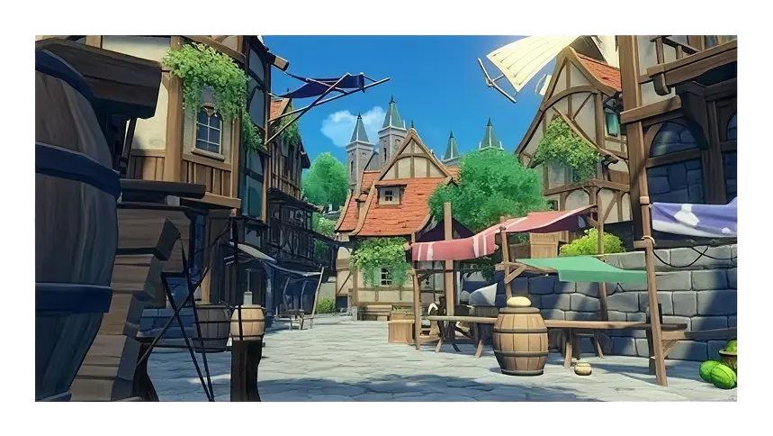
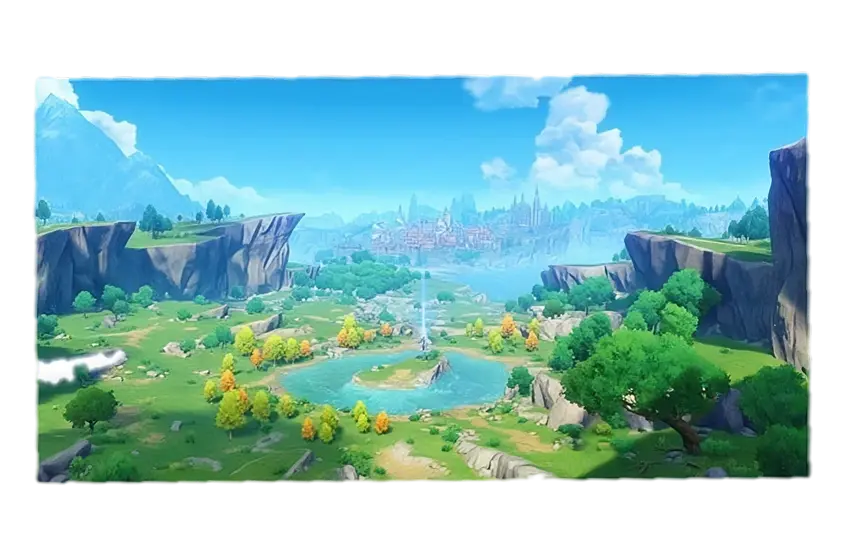
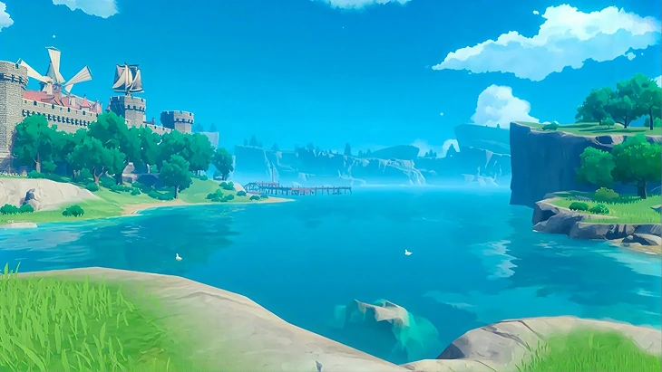
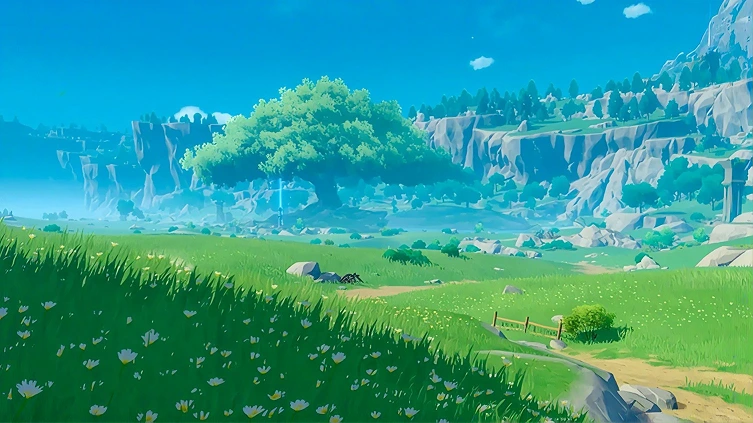
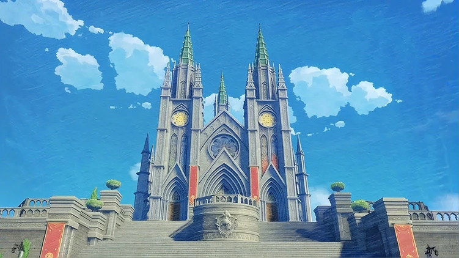

You love good food and drinks and want to spend your evenings enjoying famous wines, refreshing ciders, and hearty local dishes.
"The City of Freedom Expedition"
MONDSTADT
Duration: 3 days / 2 nights
12,500 PHP
per person
ABOUT MONDSTADT
Mondstadt, known as the City of Freedom, is a charming destination nestled among rolling hills and vibrant vineyards. Famous for its picturesque windmills and lively festivals, it offers visitors a perfect blend of rich culture and breathtaking natural beauty.
Whether you're exploring its historic streets or enjoying local delicacies at cozy taverns, Mondstadt promises an unforgettable travel experience.


You’ll enjoy this trip if...
You've always dreamed of visiting a fantasy city filled with windmills, medieval architecture, flower-covered streets, and cozy taverns.
You can't resist beautiful scenery, from towering cliffs and crystal-clear lakes to ancient trees and breathtaking sunsets.
You enjoy music, festivals, and lively cultures where every celebration is filled with songs, laughter, and unforgettable memories.
You value freedom and adventure and want a vacation where you can wander wherever the wind takes you, discovering stories and surprises along the way.
YOUR STOPS
A closer look at the destinations waiting for you on this expedition.

CIDER LAKE
Surrounding the City of Mondstadt with its crystal-clear waters, Cider Lake is the perfect destination for travelers seeking both relaxation and adventure. Stroll along its scenic shores, fish for local catches, or capture stunning photos of Mondstadt reflected on the water's surface. As the sun sets, the lake transforms into a shimmering masterpiece of gold and blue, creating a view you'll never forget. Every breeze across Cider Lake feels like an invitation to start your next adventure.

WINDRISE
Step into a place where legends come alive beneath the branches of the iconic giant tree at Windrise. Surrounded by vast green fields and vibrant wildflowers, this magical location offers the perfect setting for exploration, sightseeing, and unforgettable photographs. Many believe the winds here carry stories from Mondstadt's past, making every visit feel like part of a grand journey. Whether you're enjoying a peaceful picnic or simply taking in the breathtaking scenery, Windrise is guaranteed to leave you in awe.

CATHEDRAL OF
MONDSTADT
Rising high above the City of Freedom, the Cathedral of Mondstadt is a breathtaking landmark that combines history, culture, and magnificent architecture. Marvel at its towering spires, colorful stained-glass windows, and grand interior while learning about the stories that shaped Mondstadt. Climb nearby viewpoints for spectacular city panoramas or soak in the peaceful atmosphere that draws visitors from across Teyvat.
INCLUSIONS
- 3 days / 2 nights standard inn accommodation in Mondstadt City with daily breakfast
- Guided walking and carriage tours to Cider Lake, Windrise, and the Cathedral of Mondstadt
- Welcome tasting platter at a local Mondstadt tavern
- Regional travel permits and licensed Mondstadt Branch tour guide
EXCLUSIONS
- Cross-border transit to and from Mondstadt City
- Lunches, dinners, and specialty beverages not listed in the itinerary
- Personal souvenirs, wind-gliding (aerial flight) fees, and travel insurance (required)
SAMPLE ITINERARY
DAY 1 - Arrival & Cider Lake Promenade
Check-in at Mondstadt City Branch, orientation briefing, afternoon lakeside walk along Cider Lake, and welcome tavern tasting platter.
DAY 2 - Windrise & Historic Stone Landmarks
Morning carriage tour to Windrise and the Great Oak(ancient landmark tree), afternoon architectural tour of the Cathedral of Mondstadt, and free evening at the plaza.
DAY 3 - Morning Market & Departure
Breakfast at the inn, free time for local souvenirs, and checkout at Mondstadt City.
READY TO EXPLORE MONDSTADT?
Base price: 12,500 PHP per person
Duration: 3 days / 2 nights
Package code: MOND-01

FREQUENTLY ASKED QUESTIONS
What should I wear for the Mondstadt tour?
Light, breathable casual clothing and comfortable walking shoes are ideal for Mondstadt’s mild, breezy plains. Bring a light windbreaker or cardigan for evening walks near Cider Lake.
What should I bring with me?
Bring a valid travel ID, your MOND-01 booking confirmation, a refillable water bottle, sunglasses, and personal Mora (local currency) for tavern drinks and market souvenirs.
Is the tour suitable for families and children?
Yes! Mondstadt’s flat lakeside paths, gentle rolling hills around Windrise, and carriage transfers make it one of our most family-friendly tours for travelers of all ages.
How much walking is involved?
Light to moderate walking (around 2 hours daily) across cobblestone city plazas and lakeside trails, with horse-drawn carriage transport provided to Windrise.
Can I explore on my own during the trip?
Yes. You have free time during your second evening at the Cathedral plaza and on Day 3 morning to browse local shops or relax at a tavern independently.
Are there any rules or protocols I should follow during the tour?
Keep noise respectful inside the Cathedral of Mondstadt, never attempt uncertified wind-gliding (aerial flight) without an official Knights of Favonius (local city guard) license, and stay clear of restricted Dragonspine (snowy mountain region) border trails.